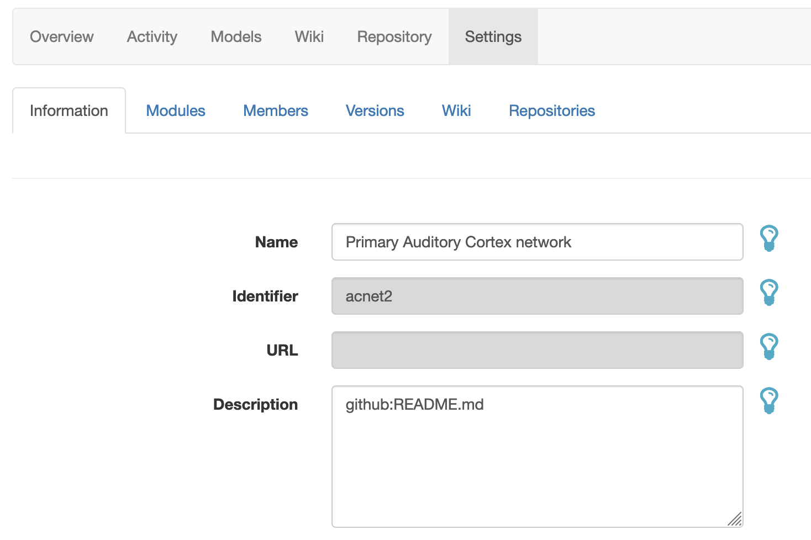
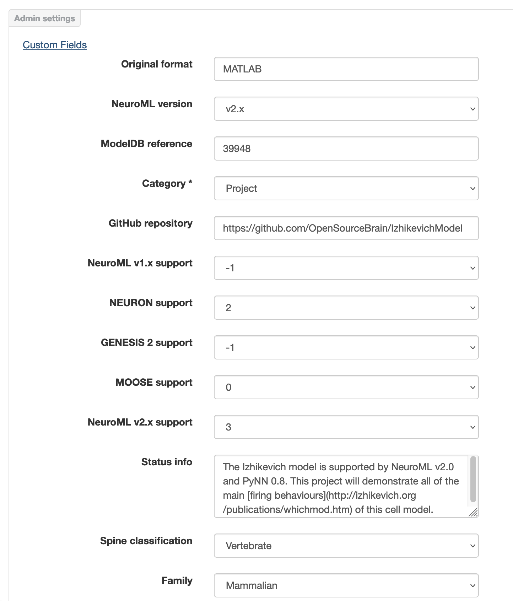

Document your project
Contents
Document your project#
There are a number of options for adding documentation and annotating your OSB project:
Add a README file in your GitHub repository and reuse it on your OSB projects#
A README file is a great way to give a quick overview of the contents of your repository and how to use it. If you share your code on GitHub, adding a README at the top level means that anyone who comes to the repository can see a quick introduction to the contents. These are generally created in easy to edit Markdown format.
To avoid the need to copy/paste the description and to avoid the summary going out of data in one place, you can reuse the exact contents of the README from GitHub for your main description on OSB. Just add the following to the text field for the main project description in Settings:
github:README.md
{kind=link}

For example this: https://github.com/OpenSourceBrain/ACnet2/blob/master/README.md is also used as the project description in the OSB project page here: http://www.opensourcebrain.org/projects/acnet2.
Set values for custom fields#
A number of values can be set for fields of the project in OSB to categorise the model, link to other resources, and facilitate finding the model on OSB. These include the location of the original scripts on ModelDB, the species and brain region being modelled, and the state of curation of the model.
These can be accessed at Settings. Note: you need to click the Custom Fields tab under Admin settings to change these values!
{kind=link}

Add Wiki pages to OSB projects#
To add a new Wiki page to your OSB project click on the “Wiki” link on the project option bar (when logged in) and start editing the wiki page.
OSB documentation is written in Markdown format syntax, together with some further Redmine and OSB specific additions (see below for further information). Note Markdown allows you to include most HTML syntax (i.e. videos…). In order to be as compatible as possible with GitHub wikis, OSB uses GitHub Flavored Markdown. You can find a cheatsheet here.
We describe briefly below some OSB/Redmine features to enhance Wiki pages on OSB (these can also be used in the text field for the main project description in Settings).
Reference to a Repository file.#
You can point to any file (markdown or plain text) in your GitHub or Bitbucket repository (the repository used in your project).
github:[path]
bitbucket:[path]
This will retrieve the file content and display it in the OSB wiki page. This allows a single file in your repo (e.g. the main README.md) to be the master copy of the documentation for your project, and to make that accessible to someone browsing the project on OSB.
Example:
github:help/readme.md
bitbucket:help.txt
Reference to PubMed publication:#
pubmed:[publicationID]
Example:
pubmed:17442244
This syntax will generate a reference link like this (link only correctly rendered on OSB): pubmed:17442244 and a bibliography section will be automatically generated at the bottom of the page.
Create a formula#
You can write formulas in your documentation using the LaTeX syntax. You only need to enclose you formula like this:
{{latex(formula)}}
Example:
{{latex(x=\frac{-b\pm\sqrt{b^2-4ac}}{2a})}}
This will automatically generate the following image using the google chart API:

Link to Wiki page#
If you want to link to other Wiki page:
[[Wiki page]]
Link to an Issue#
If you want to link to an issue in your project:
Issue #12
Issue #12
Link to a Commit#
If you want to link to a commit in your repository:
commit:f30e13e43